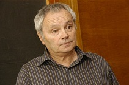
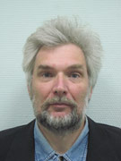
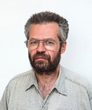
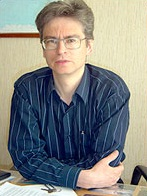
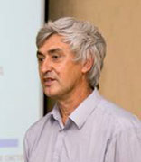

|

Литвак Александр Григорьевичнаучный руководитель Института прикладной физики РАН, академик РАН, член Президиума РАН, д.ф.-м.н., профессор |

Вдовин
|
Кочаровский Владимир Владиленовичведущий научный сотрудник ИПФ РАН, член-корреспондент РАН, д.ф.-м.н. |
|

Глявин Михаил Юрьевичзаместитель директора института по научной работе, д.ф.-м.н., доцент ВШОПФ ННГУ им. Н.И. Лобачевского |

Хазанов Ефим Аркадьевичзаместитель директора, руководитель Отделения нелинейной динамики и оптики, зав. отделом нелинейной и лазерной физики, член-корреспондент РАН, д.ф.-м.н. |

Малеханов Александр Игоревичзаведующий отделом геофизической акустики, зав. лабораторией когерентной и нелинейной геоакустики, заместитель руководителя Отделения геофизических исследований по научной работе, к.ф.-м.н. |
|

Лапинов Александр Владимировичзав. лаб. ИПФ РАН, д.ф.-м.н., председатель нижегородского научно-просветительского центра "Знание-НН" |

Железнов Дмитрий Сергеевичзаместитель директора института по общим вопросам и экономике, к.ф.-м.н. |